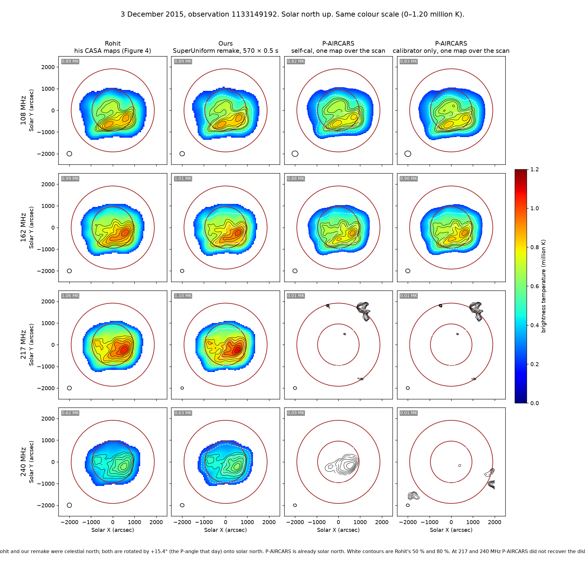
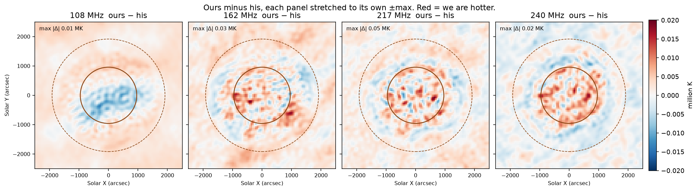
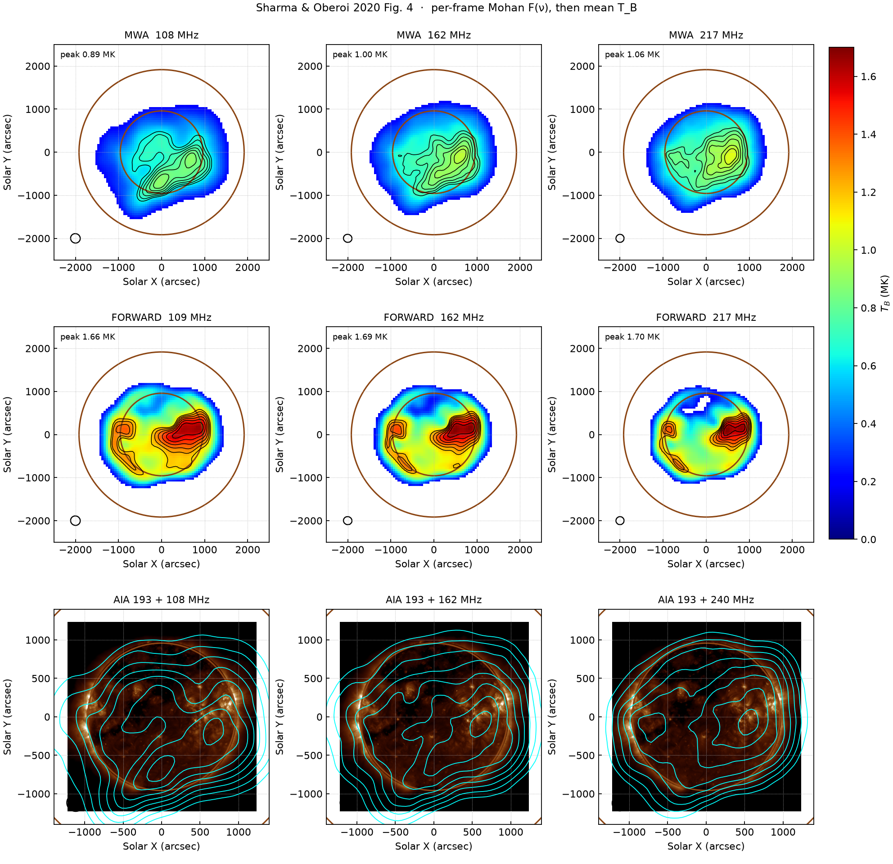
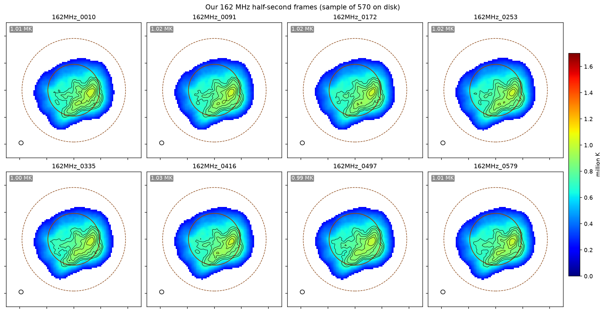
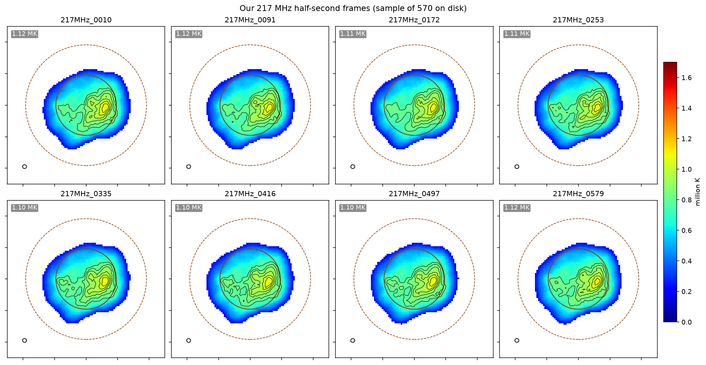
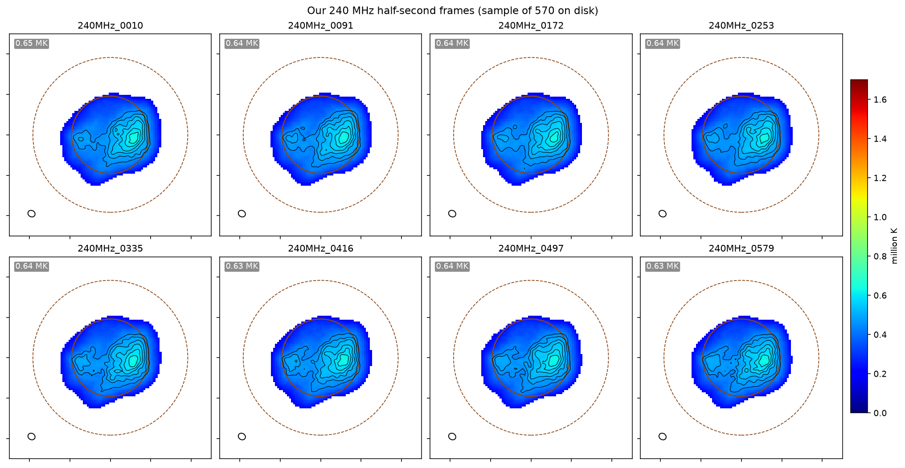
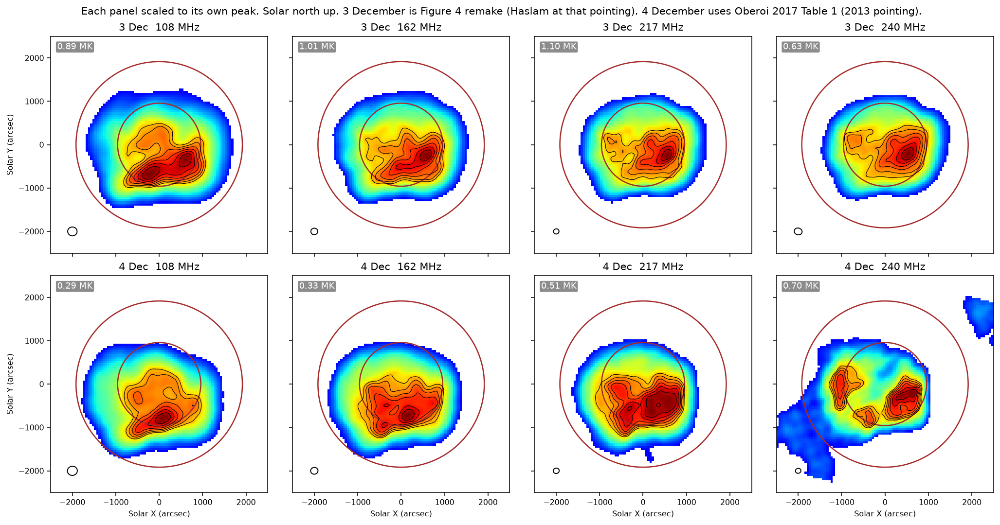

Quiet Sun
Images
3 December 2015, 03:39–03:44 UT

Haslam et al. 1982 at this pointing, 3 December 2015 03:42 UT. Tile beam 90 / 9 / 0.9 % on the right. Sun in yellow.

Rohit, remake, P-AIRCARS self-cal, P-AIRCARS calibrator-only. Solar north up. Peaks at 108 MHz: 0.89 / 0.89 / 0.82 / 0.83 million K. At 217 and 240 MHz P-AIRCARS is noise.

Rohit, mean of 570 frames. 0.89 / 1.00 / 1.06 / 0.62 million K.

Remake, mean of 570 SuperUniform frames. 0.89 / 1.01 / 1.10 / 0.63 million K.

Rohit (top) and remake (bottom), 0–1.7 million K.

Remake minus Rohit. Peak |Δ| 0.01 / 0.03 / 0.05 / 0.02 million K.

MWA, FORWARD, AIA 193. MWA 0.89 / 1.00 / 1.06 million K; FORWARD 1.66 / 1.69 / 1.70 million K.

108 MHz, sample of 570 × 0.5 s.

162 MHz, sample of 570 × 0.5 s.

217 MHz, sample of 570 × 0.5 s.

240 MHz, sample of 570 × 0.5 s.

2.9 / 6.5 / 11.7 / 8.2 solar flux units at 108 / 162 / 217 / 240 MHz.

162 MHz against P-AIRCARS pair 113–114 (145.9 MHz).
3 December 2015, 03:39–03:44 UT
3 December 2015, 03:49–03:54 UT

Haslam et al. 1982 at this pointing, 3 December 2015 03:52 UT. Tile beam 90 / 9 / 0.9 % on the right. Sun in yellow.

Rohit's SuperUniform images, mean of 570 × 0.5 s after Mohan 5σ. Haslam 1982 at this pointing. Solar north up. Peaks 1.15 / 1.43 / 1.39 / 0.78 MK. Flux 3.52 / 8.15 / 14.61 / 9.67 solar flux units. F(ν) = 41 / 302 / 49 / 103. The 162 MHz conversion is large; the mean is still a disk.
3 December 2015, 03:49–03:54 UT
4 December 2015, 03:49–03:54 UT

Haslam et al. 1982 at this pointing, 4 December 2015 03:52 UT. Tile beam 90 / 9 / 0.9 % on the right. Sun in yellow.

CASA SuperUniform, mean of 579 × 0.5 s. Solar north up. Peaks 0.29 / 0.33 / 0.51 / 0.70 million K. Flux 0.86 / 2.22 / 5.99 / 5.35 solar flux units (Oberoi 2017 Table 1, 2013 pointing). 240 MHz Mohan F(ν) = 532; that panel is not a disk.

Each panel scaled to its own peak. Solar north up. Top: Figure 4 remake. Bottom: 4 December noon scan.